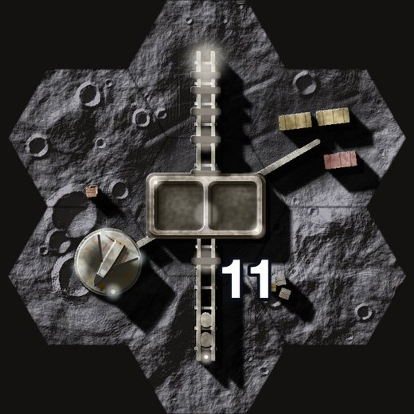
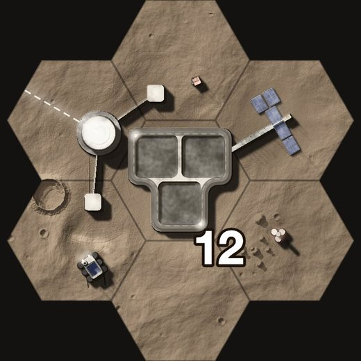
Today the 11 and 12 (right) are a hub with one long thing beside it: a rail, a mast. Each option here is a landmark instead, a structure that fills its tile and that a map could be named after. Every tile is the game’s own render, drawn by the same parts as the other bases (landmarks.ts, branch structures), each on two worlds; every map is laid out by the engine from a draft layout.
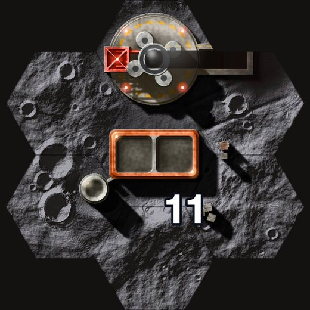
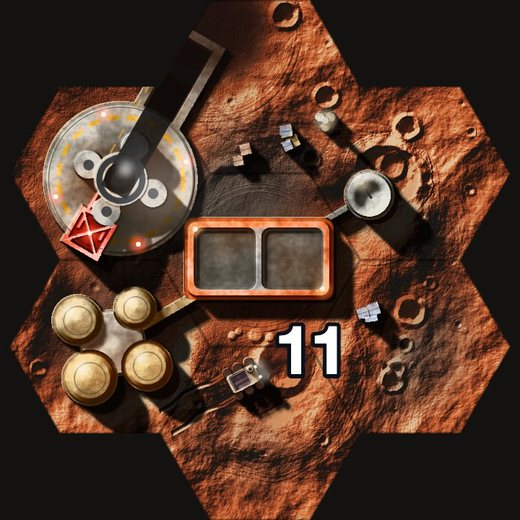
A heavy rocket on its mount, the service tower’s swing arms reaching to it, and a flame trench sunk beside it, running off sideways and black with soot. The hub is the blockhouse; fuel tanks, a dish and containers stand round it.
A lane between two 8 starts, widened round the middle. The 11 is walled in by four 9s, the propellant, and two 8s, so every way to it crosses an objective someone else wants. Two seats on the rocket: two cubes.
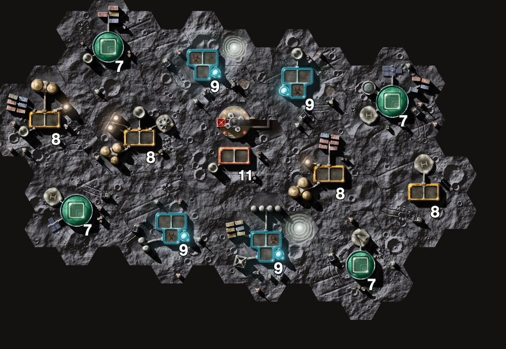
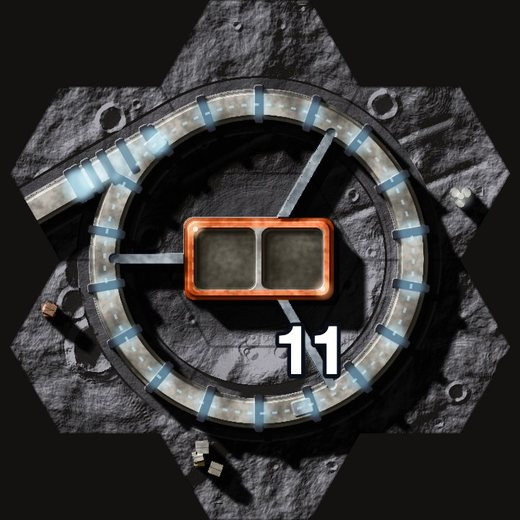
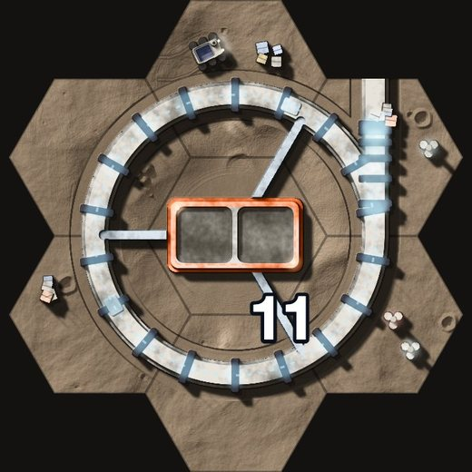
The Mass Driver wound into a loop: a ring track round the hub, eighteen coils glowing blue-white, pods riding it, and one straight run leaving it on a tangent, off the tile, where the pods are thrown to orbit.
The map the 11 stands on today, unchanged: the ring fills the middle of the triangle, a walkway out towards each start.
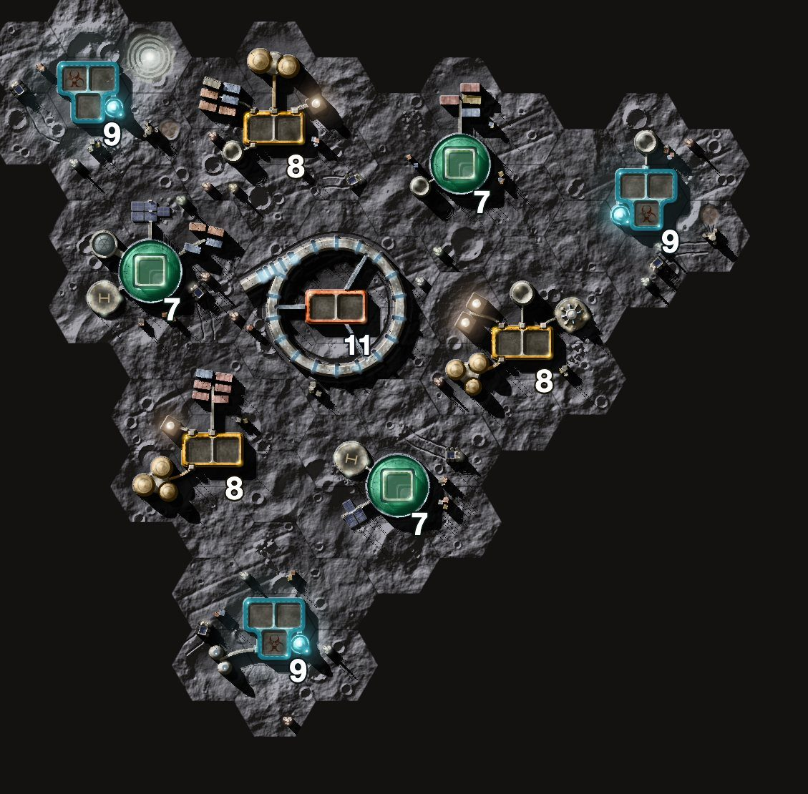
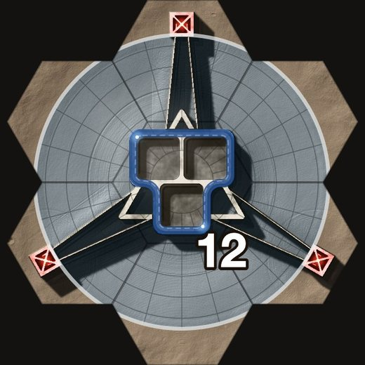
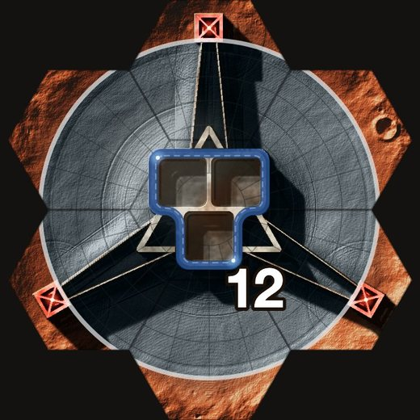
A radio dish laid in a crater, its mesh in rings and spokes. The receiver, the hub, hangs high over the middle on cables from three pylons on the rim, and its shadow falls into the bowl. It fills the tile.
Four arms of 8s out from the dish, 7s round it, and four Alien Artefacts between the arms: what the array is listening to. Research on the way in, the 12 in the middle. Turns onto itself by a half turn, like Fourfold Confluence: north and south match, east and west match.
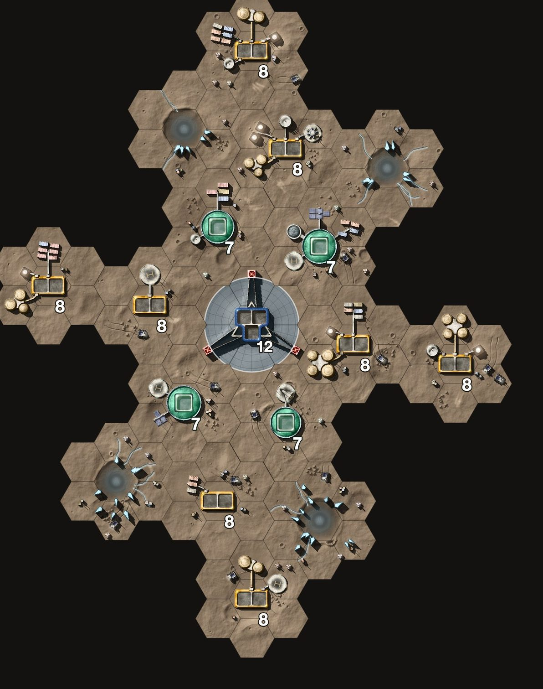
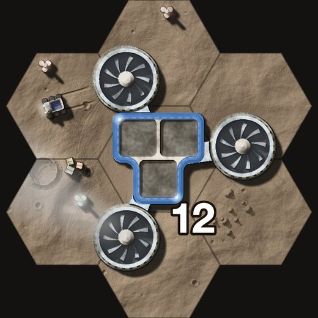
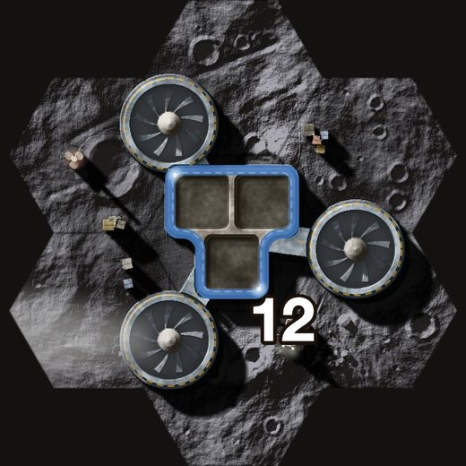
Three great intake fans round the hub, joined by wide ducts, their blades blurred as they turn, a plume of vapour drifting off downwind. One fan for each of the hub’s three sockets.
Mare Trigonum’s triangle moved to Deimos, the plant in the middle and the Habitats it keeps breathing round it: 7s where the 8s were. Three starts, three fans.
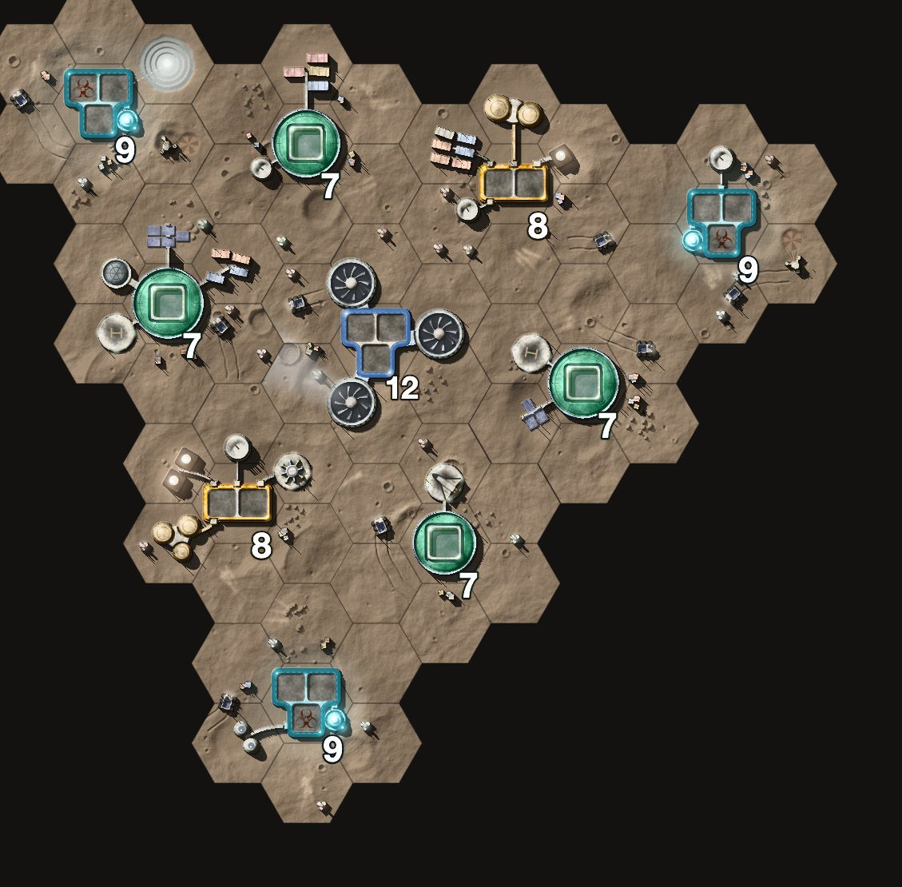
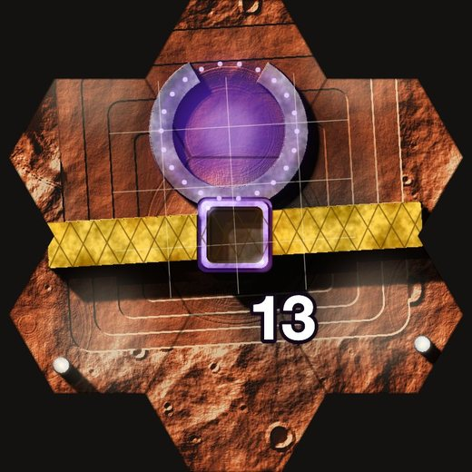
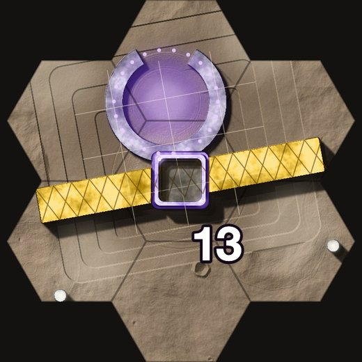
An excavation stepped down in benches round a ring of dark stone, half out of the ground, glyphs along it and violet light inside. The hub stands on a scaffold bridge across the dig; floodlights at its corners.
Crater Rim’s ground with four Alien Artefacts round the dig: research all the way in, one cube at the bottom. The first there wins it; the other goes home.
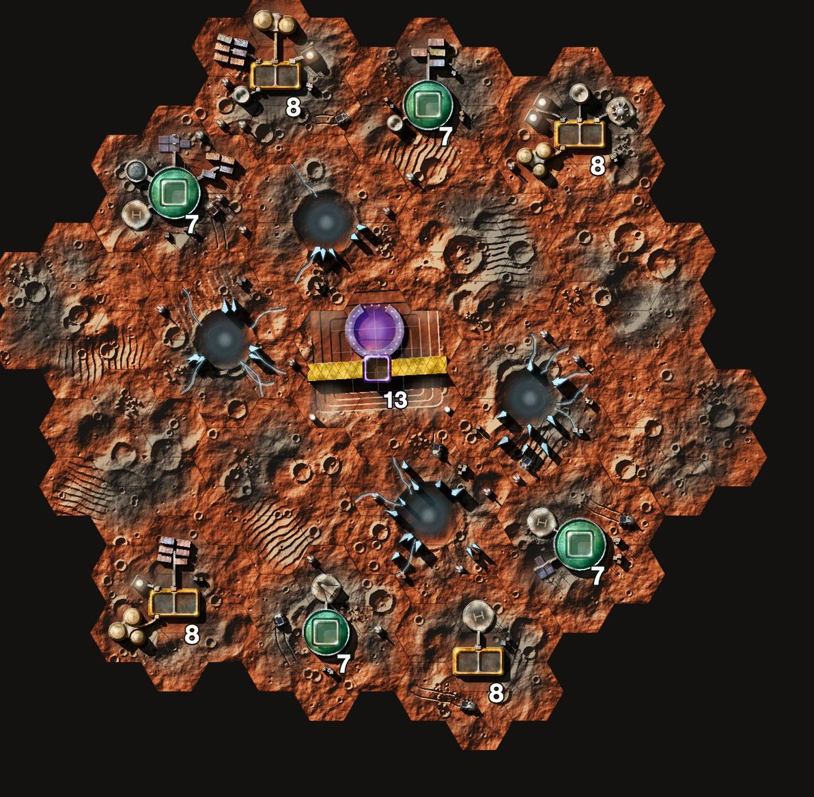
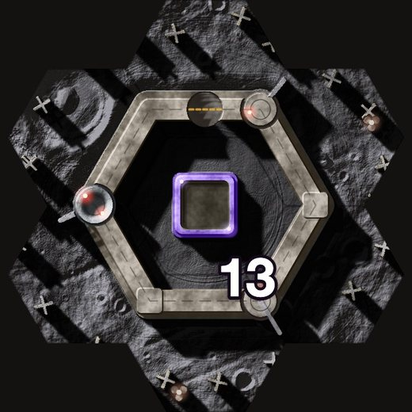
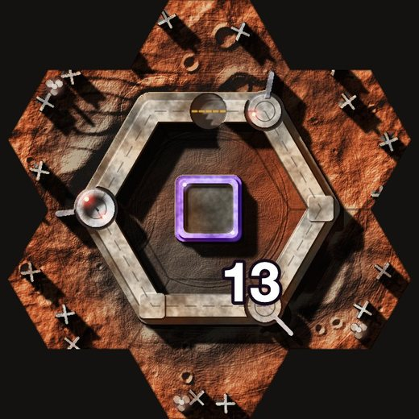
A command bunker in a hexagonal blast wall, the hub in its sunk courtyard: turrets on three corners, a radar on a fourth, a gate, and a ring of tank traps beyond the berm.
Crater Rim’s rim of barriers (the amber squares) round the 13, its two breaches the only ways in. Whoever holds a breach holds the race.
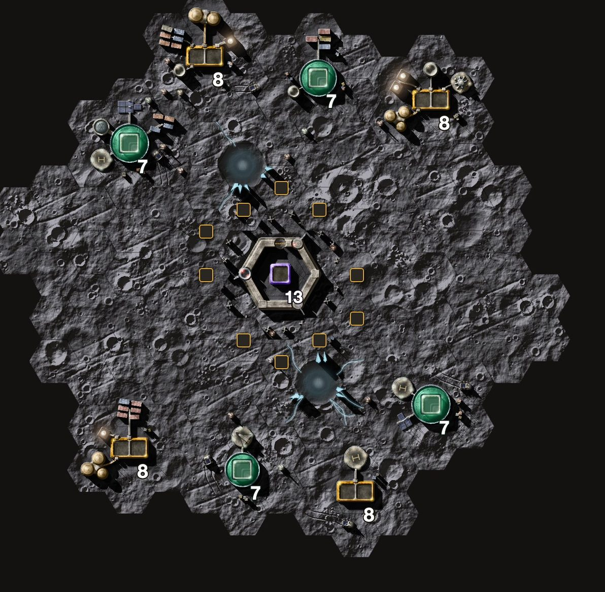
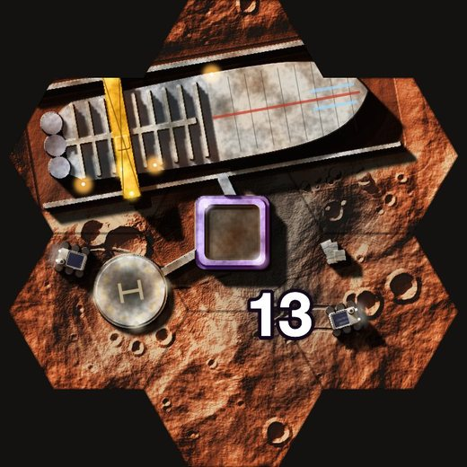
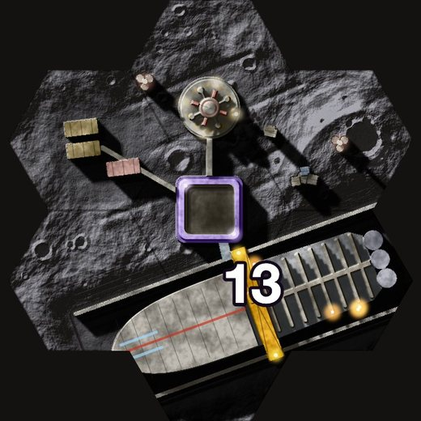
A ship being built in a dock cut into the ground: its bow plated, its stern still bare ribs, a gantry crane across it on rails, welders’ sparks along it. The hub is the dock’s control deck.
Ice Run’s long lane with the 13 in the middle and an Ice Tunnel (the blue rings) between the 9s either side of it: fight through the yard for the 13, or go round it.
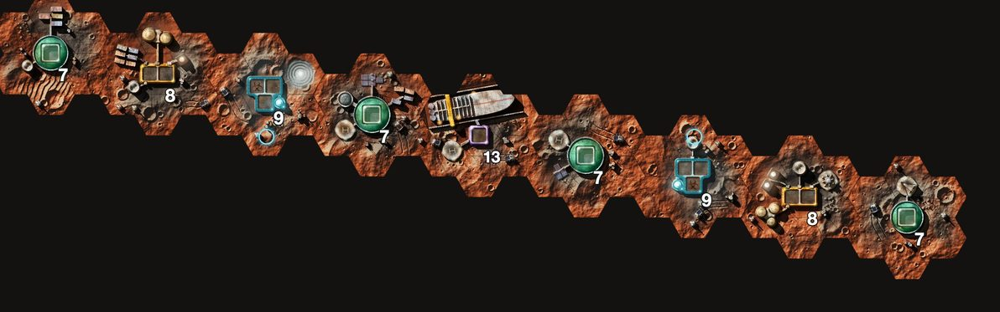
Mix and match. Any landmark goes with any map of its number: each tile names its design, and the base draws it in place of the number’s usual one.
Worlds. Today the 11 stands on Phobos only and the 12 on Deimos only (the engine’s WORLD_OBJECTIVES). The ring suits Phobos’s low gravity and the array Deimos’s quiet; the launch complex, plant and the 13s could stand anywhere.
The Dig leans on the Alien Artefact. The World board says “no aliens”, but the objectives table already has the Alien Artefact. If aliens are out, the ring could be a pre-war ice vault instead.
New hub inks. Oxide for 11, Cobalt for 12, Violet for 13, after the ObjectiveColours cut: the hub in colour, everything round it faded. The landmark itself keeps its own colours.
Not yet. The maps aren’t in data/maps.yaml and haven’t been played by the AI; the 13 isn’t in the engine. Each map is a layout the engine accepts, its tiles drawn where the game would put them.